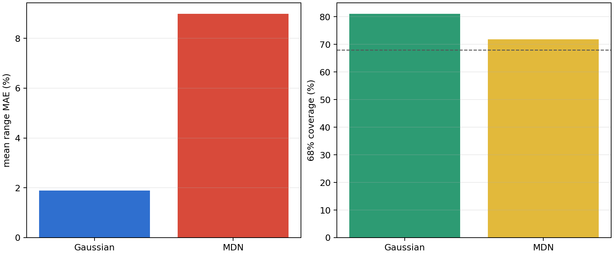
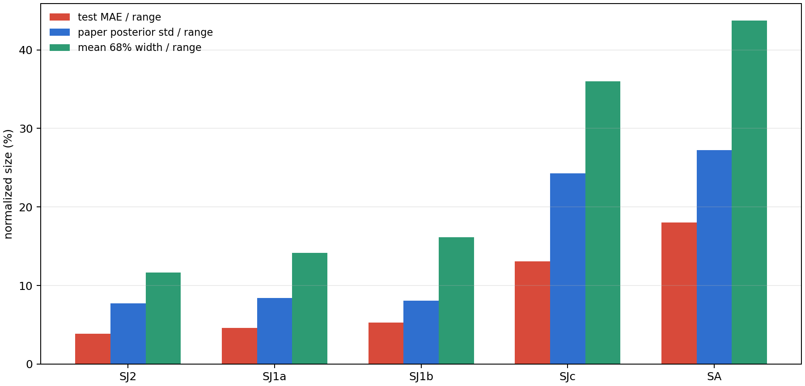
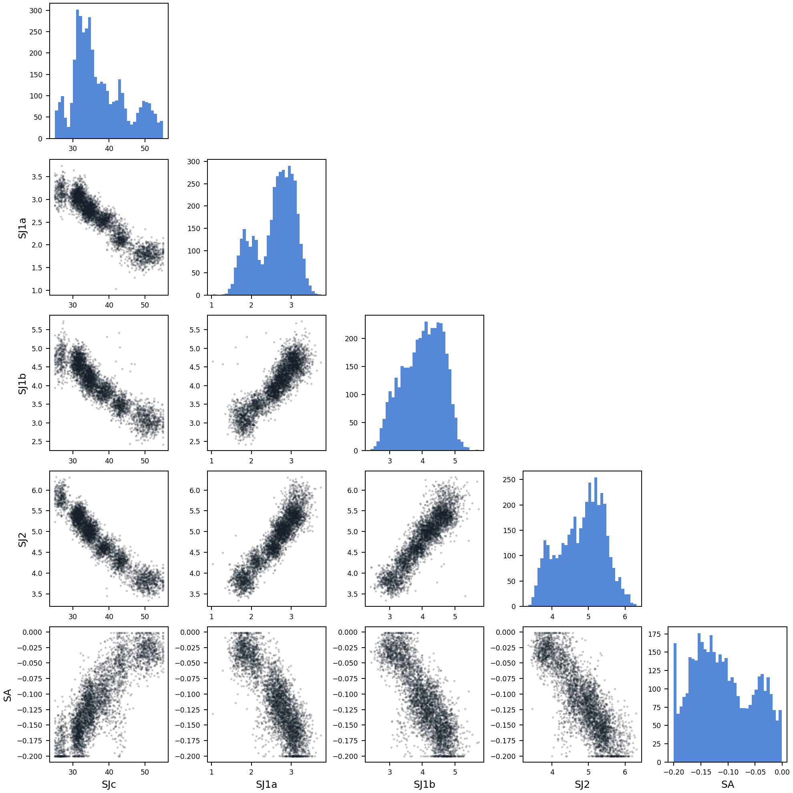
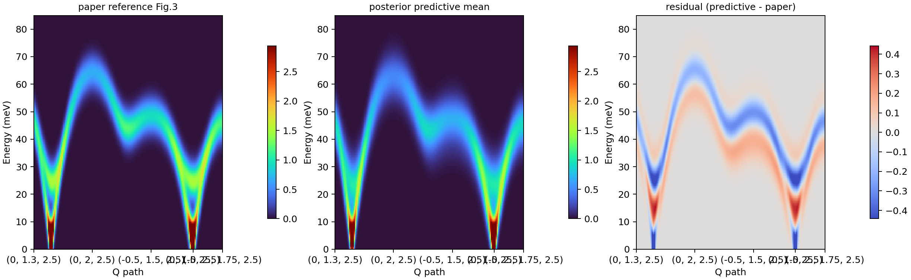
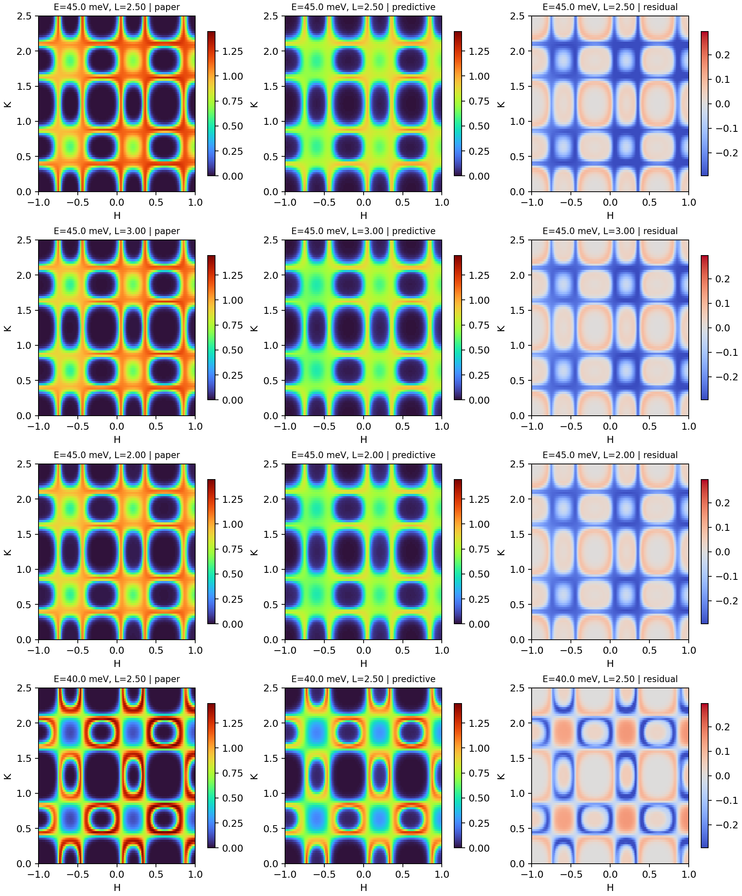

结论先看这里
当前最重要的风险不是训练是否收敛，而是参数是否真的可辨识。判断标准是三件事要同时看：测试集误差不能太大，paper 谱对应的后验不能太宽，posterior predictive 不能只复现强峰而丢掉结构细节。
数据源：data/lno327_inverse_4d_wide_fwhm10_n2048_q160_e180_h81_k121_l5.h5。posterior predictive 这里使用的是“参数空间最近邻的 Sunny 样本近似”，不是重新调用 Sunny 做严格重正演，所以它适合做方向性诊断，不适合当成最终物理论证。
模型对比
| 模型 | test mean range MAE | test MAE (meV) | 68% coverage | 95% coverage | best epoch | 耗时 |
|---|---|---|---|---|---|---|
| Gaussian | 1.89% | 0.232 | 81.1% | 97.8% | 177 | 0.68 h |
| MDN | 8.98% | 0.9865 | 71.8% | 96.9% | 87 | 0.34 h |

参数可辨识性
这里把三种量放在一起：测试集误差、paper 谱后验宽度、测试集平均 68% 区间宽度。若这三项里有两项都偏大，就说明该参数更像“只能约束到一个范围”，而不是能稳定反推出单值。
| 参数 | test MAE/range | paper posterior std/range | mean 68% width/range | 68%覆盖 | 95%覆盖 | R2 | 风险 |
|---|---|---|---|---|---|---|---|
| SJ2 | 3.88% | 7.74% | 11.66% | 75.0% | 97.7% | 0.969 | 中 |
| SJ1a | 4.62% | 8.43% | 14.16% | 73.0% | 98.4% | 0.952 | 中 |
| SJ1b | 5.31% | 8.06% | 16.13% | 76.6% | 96.4% | 0.928 | 中 |
| SJc | 13.08% | 24.26% | 35.98% | 68.8% | 95.1% | 0.648 | 高 |
| SA | 18.02% | 27.21% | 43.73% | 65.5% | 97.0% | 0.364 | 高 |

参数耦合
下面这张 pair plot 用的是 paper reference 谱对应的 MDN 后验样本。若某两列总是拉成长条，说明它们更像“联动组合”而不是彼此独立可测。

Posterior Predictive
Fig.3 近似 posterior predictive：RMS=0.09731, MAE=0.04561。这里从 paper posterior 中抽样，再在数据集参数库里找最近邻 Sunny 样本，最后做平均谱。
Fig.3 使用 256 个 posterior 样本；4D 使用 32 个 posterior 样本。样本数控制在这个量级，是为了让结果足够稳定，同时不把 4D 体数据撑得太大。

4D 近似 posterior predictive：RMS=0.07891, MAE=0.04144。这里自动挑出残差最大的 4 个 (energy, L) 切片，用来判断模型在哪些 map 区域最难复现。
